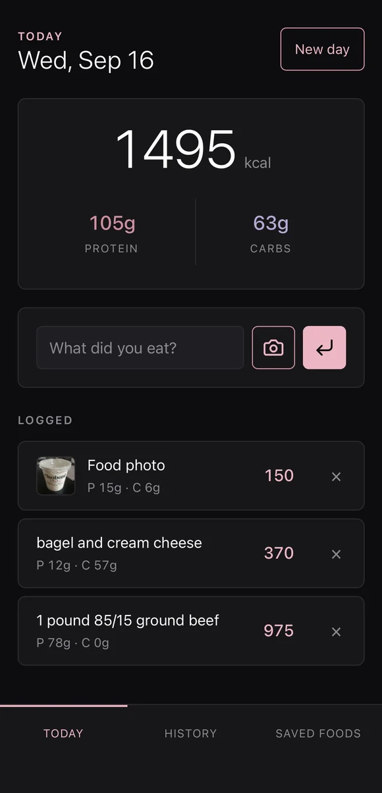
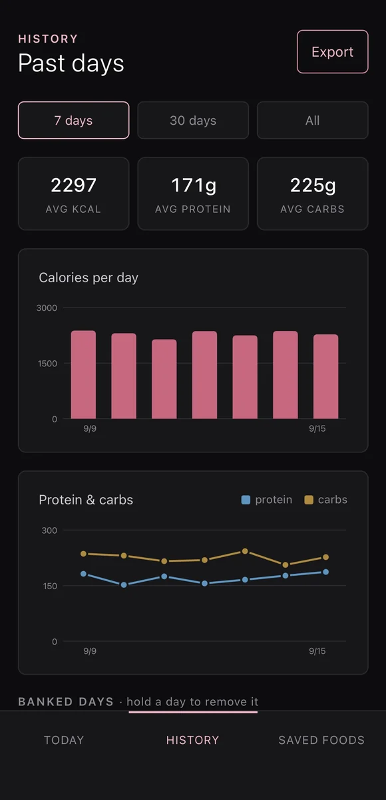

# Cassie's CalTrackerAI
AI calorie and macro tracker built as an installable web app (PWA). Uses the Claude API for meal estimates, a Cloudflare Worker to keep the API key server-side, and IndexedDB for offline, on-device storage.
Signing in needs a private app token, so the live link opens to the connection screen.


# how it works
Keys never reach the phone
An API key in frontend JavaScript is readable by anyone who opens DevTools, so the app talks to a Cloudflare Worker that holds the key as an encrypted secret, checks a shared token, and proxies to Claude. Spend is capped at the account level.
How the API call works
The app sends the meal to the Worker, either as text or as a photo resized on the
phone first. The Worker checks the token and calls the Claude API with a short
system prompt and a response schema. Claude returns exactly
{ calories, protein_g, carbs_g }, which the Worker passes back and
the app adds to the day's log.